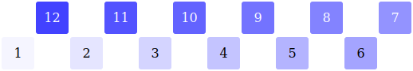

Le but du jeu est de remettre les nombres dans le bon ordre en utilisant les touches I et M, après les avoir mélangés.
I inverse l'ordre des nombres. Ce que fait M est plus compliqué : les nombres sont divisés en deux moitiés, la moitié de droite est inversée, puis les moitiés sont insérées l'une dans l'autre en intercalant les nombres, comme quand on mélange un paquet de cartes.
En images, cela donne :
|
|
|  |
|
|
Ce jeu a été présenté dans le numéro d'octobre 2008 de Pour la science (article complet réservé aux abonnés) et auparavant dans celui de juillet 2008 de Scientific american (en anglais). Le site de Scientific american propose aussi un supplément et même une résolution.